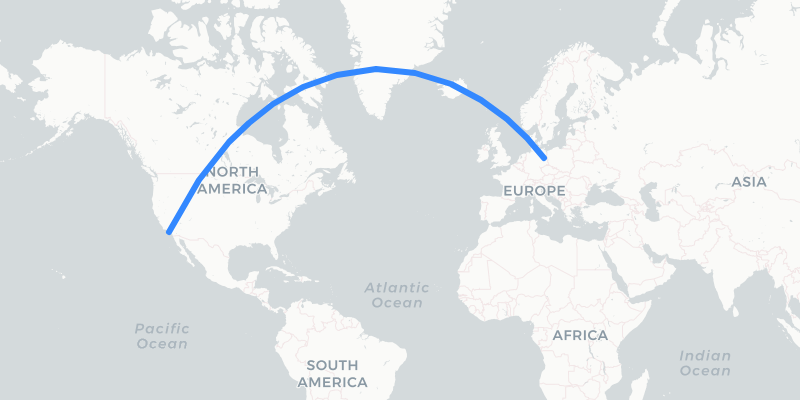
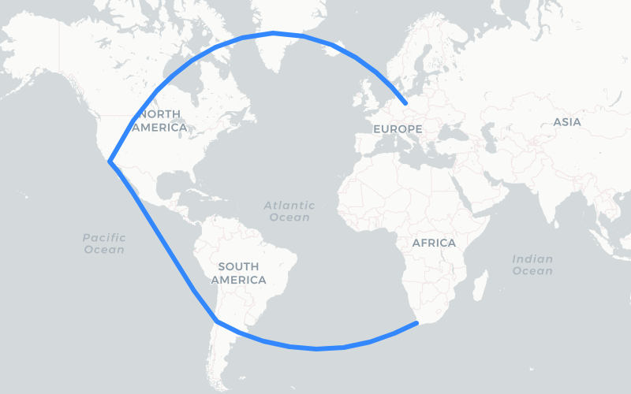
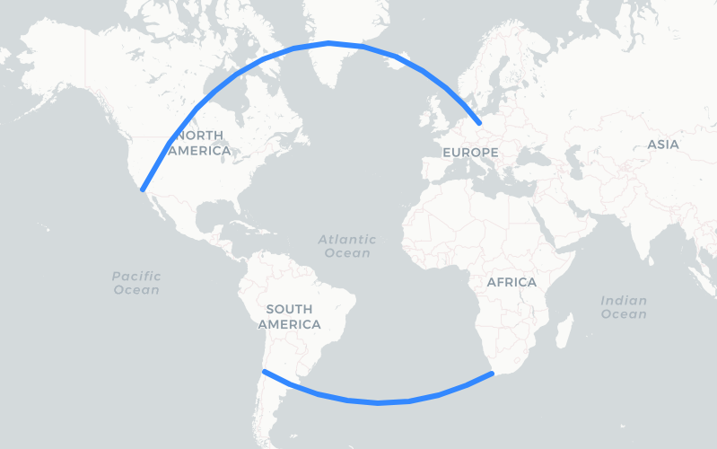
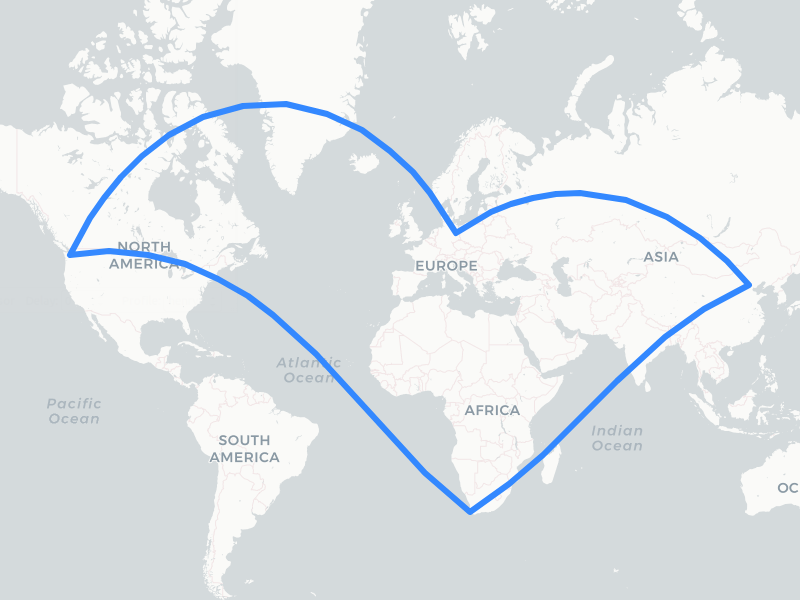
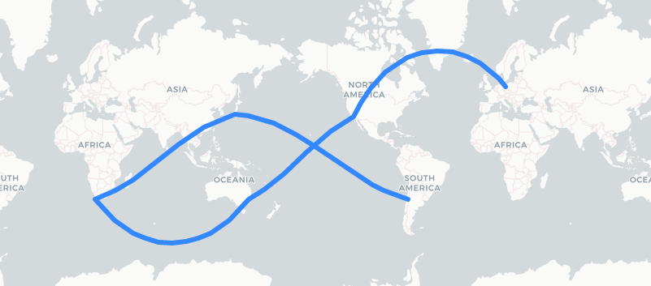
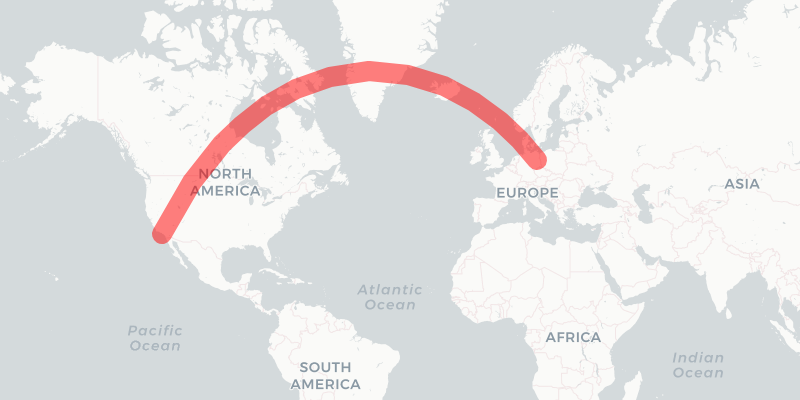
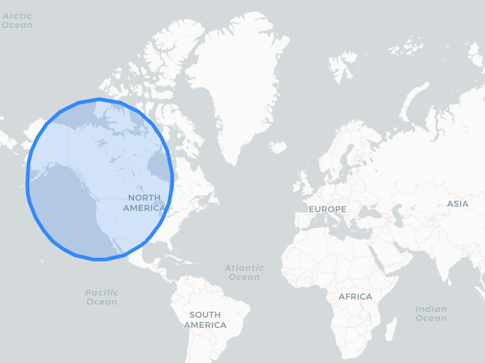

leaflet.geodesic
Leaflet.Geodesic


Add-on for Leaflet to draw geodesic lines and circles. A geodesic line is the shortest path between two given positions on the earth surface. It's based on Vincenty's formulae implemented by Chris Veness for highest precision.
Add the plugin to your project
Leaflet.Geodesic is available via CDN. Add the following snippet to your html-file after you have included leaflet.js.
<!-- Make sure you put this AFTER leaflet.js -->
<script src="https://cdn.jsdelivr.net/npm/leaflet.geodesic"></script>
Leaflet.Geodesic is available via the following CDNs:
Add it in your nodejs-project with npm i leaflet.geodesic.
It is good practice, to pin the plug-in to a specific version and use Subresource Integrity. Check the release page for the latest version, links and checksum. A checksum can by verified with npm run build, is stored in dist/leaflet.geodesic.umd.min.js.sha512 on jsDelivr and unpkg and is shown in the build-log for a tagged version.
Basic usage
L.Geodesicdraws geodesic lines between all points of a given line- or multiline-string.L.GeodesicCircledraws a circle with a specific radius around a given point.
The Objects can be created as follows:
const geodesicLine = new L.Geodesic().addTo(map); // creates a blank geodesic-line-object and adds it to the map
const geodesicCircle = new L.GeodesicCircle().addTo(map); // creates a blank geodesic-circle-object and adds it to the map
Alternative method:
const geodesicLine = L.geodesic().addTo(map); // lower-case, w/o new-keyword
const geodesicCircle = L.geodesiccircle().addTo(map); // lower-case, w/o new-keyword
Make sure you add the geodesic-object to the map (.addTo(map)). It won't display otherwise.
Each constructor is defined as:
Geodesic(latlngs?: L.LatLngExpression[] | L.LatLngExpression[][], options?: GeodesicOptions)
GeodesicCircle(center?: L.LatLngExpression, options?: GeodesicOptions)
Both classes are extended from L.Polyline, so all methods, events and options for L.Polyline can be used with L.Geodesic and L.GeodesicCircle here as well. Any alt-properties given with any points are preserved by L.Geodesic.
Geodesic Lines
This draws a line. The geometry (points) to use can be given during creation as:
Objects (Literals)
const Berlin = {lat: 52.5, lng: 13.35};
const LosAngeles = {lat: 33.82, lng: -118.38};
const geodesic = new L.Geodesic([Berlin, LosAngeles]).addTo(map);
LatLng-Class
const Berlin = new L.LatLng(52.5, 13.35);
const LosAngeles = new L.LatLng(33.82, -118.38);
const geodesic = new L.Geodesic([Berlin, LosAngeles]).addTo(map);
Tuples
const Berlin = [52.5, 13.35];
const LosAngeles = [33.82, -118.38];
const geodesic = new L.Geodesic([Berlin, LosAngeles]).addTo(map);

Line-strings
Multiple consecutive points can be given as an array (linestring):
const places = [
new L.LatLng(52.5, 13.35), // Berlin
new L.LatLng(33.82, -118.38), // Los Angeles
new L.LatLng(-33.44, -70.71), // Santiago
new L.LatLng(-33.94, 18.39), // Capetown
];
const geodesic = new L.Geodesic(places).addTo(map);

Multi-line-strings
Multiple independent linestrings can be defined as a 2-dimensional array of points:
const places = [
[ // 1st line
new L.LatLng(52.5, 13.35), // Berlin
new L.LatLng(33.82, -118.38), // Los Angeles
],
[ // 2nd line
new L.LatLng(-33.44, -70.71), // Santiago
new L.LatLng(-33.94, 18.39), // Capetown
]
];
const geodesic = new L.Geodesic(places).addTo(map);

GeoJSON-Support
GeoJSON-data can be used to create geodesic lines with the fromGeoJson() method:
const geojson = {
"type": "LineString",
"coordinates": [
[13.35, 52.5], [-122.33, 47.56], [18.39, -33.94], [116.39, 39.92], [13.35, 52.5]
]
};
const geodesic = new L.Geodesic().addTo(map);
geodesic.fromGeoJson(geojson);

Updating the geometry
Set new geometry
The Geodesic-Class provides a setLatLngs()-Method, that can be used to update the geometry of an existing L.Geodesic-object:
const geodesic = new L.Geodesic().addTo(map); // add empty object to the map
const Berlin = new L.LatLng(52.5, 13.35);
const LosAngeles = new L.LatLng(33.82, -118.38);
geodesic.setLatLngs([Berlin, LosAngeles]) // update in-place
The setLatLngs()-Method accepts the same types (Literal, Tuple, LatLang-Class, Linstring, Multilinestring) as the L.Geodesic-constructor itself. Please refer to the section about geodesic circles below, on how to update a circle geometry.
Delete geometry
Delete the existing geometry by setting an empty array geodesic.setLatLngs([]).
adding points
Points can be added to existing geodesic lines with addLatLng():
const Berlin = new L.LatLng(52.5, 13.35);
const LosAngeles = new L.LatLng(33.82, -118.38);
const Beijing = new L.LatLng(39.92, 116.39);
const geodesic = new L.Geodesic([Berlin, LosAngeles]).addTo(map);
geodesic.addLatLng(Beijing); // results in [[Berlin, LosAngeles, Beijing]
The new point will always be added to the last linestring of a multiline. You can define a specific linestring to add to by reading the points property before and hand over a specific linestring as second parameter:
const Berlin = new L.LatLng(52.5, 13.35);
const LosAngeles = new L.LatLng(33.82, -118.38);
const Beijing = new L.LatLng(39.92, 116.39 );
const Capetown = new L.LatLng(-33.94, 18.39 );
const Santiago = new L.LatLng(-33.44, -70.71);
const geodesic = new L.Geodesic([[Berlin, LosAngeles], [Santiago, Capetown]]).addTo(map);
geodesic.addLatLng(Beijing, geodesic.points[0]); // results in [[Berlin, LosAngeles, Beijing], [Santiago, Capetown]]
Drawing over the antimeridian
In some cases it is required to draw over the antimeridian (dateline) to show a continuous path. This is possible by setting the wrap-option to false. Leaflet.Geodesic will make sure to shift the individual points to draw a continuous line, even if the coordinates are not properly aligned to a map section. See interactive example
const Berlin = new L.LatLng(52.5, 13.35);
const LosAngeles = new L.LatLng(33.82, -118.38);
const Capetown = new L.LatLng(-33.94, 18.39 );
const Santiago = new L.LatLng(-33.44, -70.71);
const Tokyo = new L.LatLng(35.47, 139.15 + 360); // these points are in another map section
const Sydney = new L.LatLng(-33.91, 151.08 + 10 * 360); // but will get shifted accordingly
const geodesic = L.geodesic(
[ Santiago, Tokyo, Capetown, Sydney, LosAngeles, Berlin],
{ wrap: false
}).addTo(map);

Line Options
All options defined for Polyline and Path for can be used Leaflet.Geodesic.
The most important options are:
| Option | Type | Default | Description |
|---|---|---|---|
color |
String |
"#3388ff" | Stroke color |
weight |
Number |
3 | Stroke width in pixels |
opacity |
Number |
1.0 | Stroke opacity (0=transparent, 1=opaque) |
steps |
Number |
3 | Level of detail (vertices = 1+2**(steps+1)) for the geodesic line. More steps result in a smoother line. Range: 0..8 |
wrap |
Boolean |
true | Wrap geodesic line at antimeridian. Set to false, to draw a line over the antimeridian. See no-wrap demo for example. |
Example:
const Berlin = new L.LatLng(52.5, 13.35);
const LosAngeles = new L.LatLng(33.82, -118.38);
const options = {
weight: 20,
opacity: 0.5,
color: 'red',
};
const geodesic = new L.Geodesic([Berlin, LosAngeles], options).addTo(map);

Geodesic Circles
Circles can be added with another class called L.GeodesicCircle as follows:
const Seattle = new L.LatLng(47.56, -122.33);
const geodesiccircle = new L.GeodesicCircle(Seattle, {
radius: 3000*1000, // 3000km in meters
}).addTo(map);

The geometry of a circle can be updated with the following methods:
setLatLng(latlng: L.LatLngExpression)- set a new centersetRadius(radius: number)- update the radius
Handling of filled circles crossing the antimeridian (wrapping) and very large circles near the poles are not yet supported. Set fill: false in these cases to avoid display artefacts.
Circle Options
| Option | Type | Default | Description |
|---|---|---|---|
radius |
Number |
1000*1000 | Radius in meters |
steps |
Number |
24 | Number of segments that are used to approximate the circle. |
fill |
boolean |
true | Draws a filled circle. |
color |
String |
"#3388ff" | Stroke color |
weight |
Number |
3 | Stroke width in pixels |
opacity |
Number |
1.0 | Stroke opacity (0=transparent, 1=opaque) |
Please refer to the options for Polyline and Path for additional settings.
Statistics
The L.Geodesic and L.GeodesicCircle-class provide a statistics-Object with the following properties:
| Property | Type | Description |
|---|---|---|
totalDistance |
Number |
The total distance of all geodesic lines in meters. (circumference for L.GeodesicCircle) |
distanceArray |
Number[] |
The distance for each separate linestring in meters |
points |
Number |
Number of points that were given on creation or with setLatLngs() |
vertices |
Number |
Number of vertices of all geodesic lines that were calculated |
Distance Calculation
The L.Geodesic provides a distance-function to calculate the precise distance between two points:
const Berlin = new L.LatLng(52.5, 13.35);
const Beijing = new L.LatLng(39.92, 116.39);
const line = new L.Geodesic();
const distance = line.distance(Berlin, Beijing);
console.log(`${Math.floor(distance/1000)} km`) // prints: 7379 km
The L.GeodesicCircle-class provides a distanceTo-function to calculate the distance between the current center and any given point:
const Berlin = new L.LatLng(52.5, 13.35);
const Beijing = new L.LatLng(39.92, 116.39);
const circle = new L.GeodesicCircle(Berlin);
const distance = circle.distanceTo(Beijing);
console.log(`${Math.floor(distance/1000)} km`) // prints: 7379 km
Scientific background
All calculations are based on the WGS84-Ellipsoid (EPSG:4326) using Vincenty's formulae. This method leads to very precise calculations but may fail for some corner-cases (e.g. Antipodes). I use some workarounds to mitigate these convergence errors. This may lead to reduced precision (a.k.a. slightly wrong results) in these cases. This is good enough for a web mapping application but you shouldn't plan a space mission based on this data. OMG, this section has just become a disclaimer...